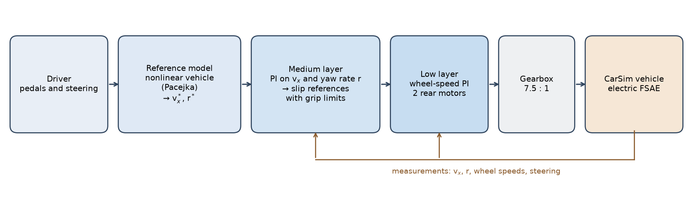
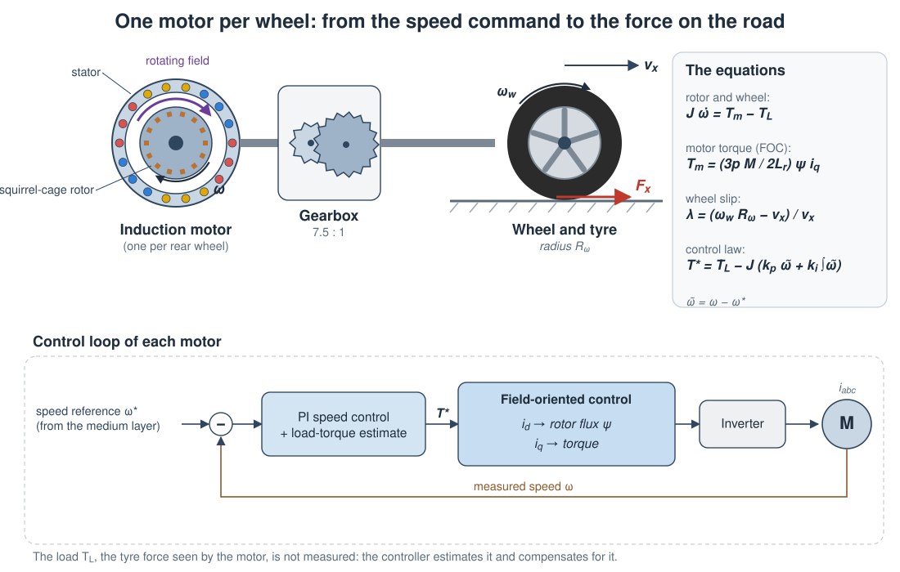
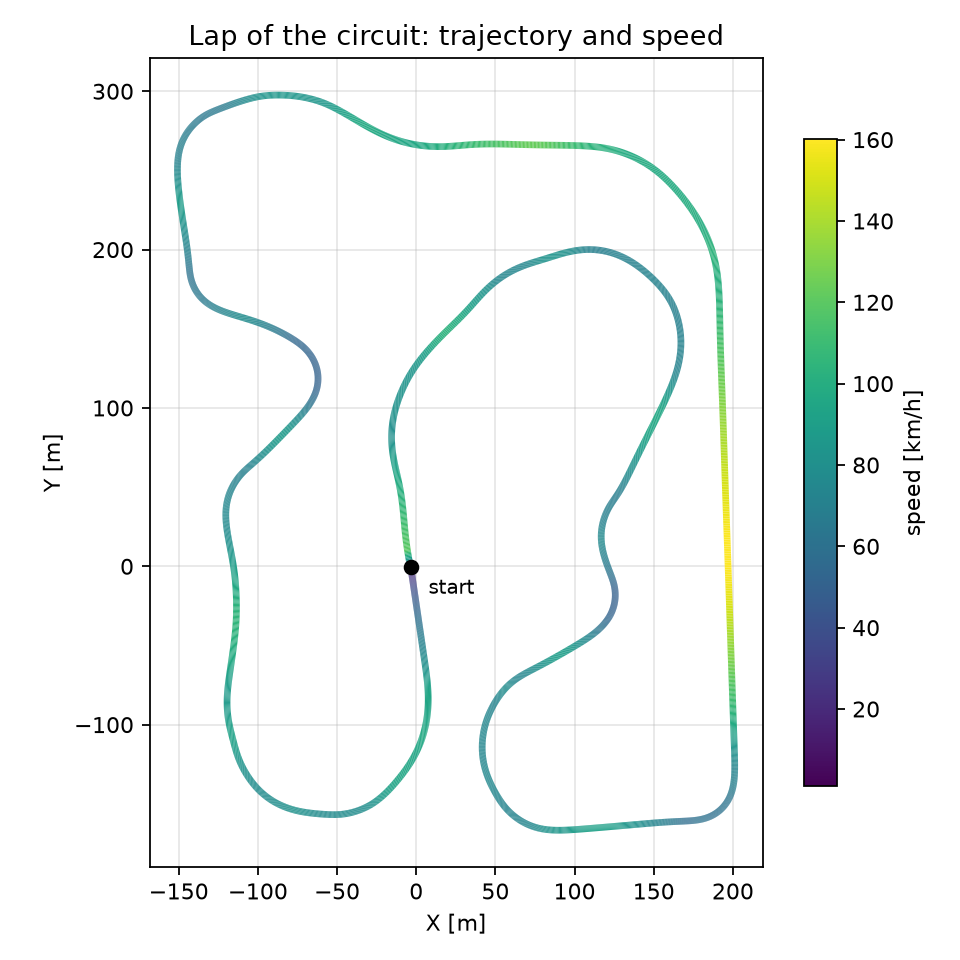
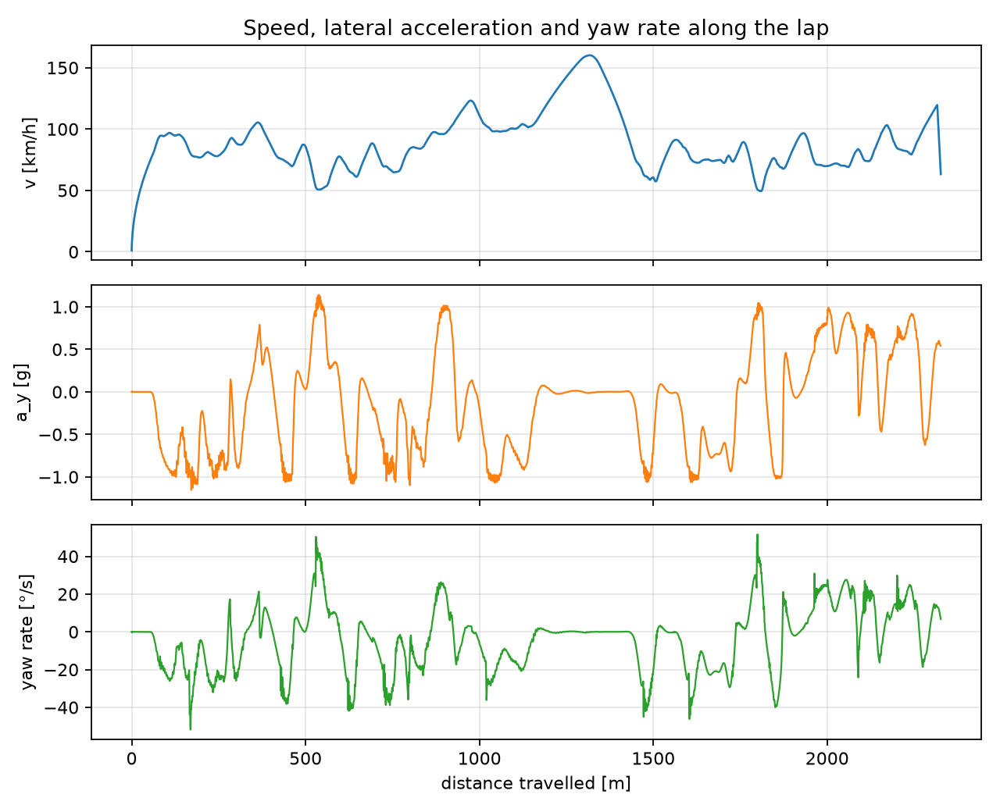

Context
An electric car with one motor per wheel needs no mechanical differential: the split of torque between the right and left wheel is decided by software. That opens two possibilities. The first is traction control: limiting a wheel's torque when it starts to slip. The second is torque vectoring: giving more torque to the outer wheel in a corner to help the car rotate, in other words controlling its yaw rate.
The project combines both on a rear-wheel-drive electric Formula SAE car. The vehicle is simulated in CarSim, which provides a full multibody model with suspension, tyres and a 3D track. The controller runs in Simulink and talks to CarSim at every step through the co-simulation S-Function.
The three-layer controller
The control is hierarchical, from the behaviour wanted for the car down to the torque of each motor:
- Reference model. A nonlinear vehicle model, with the tyres' lateral forces described by the Pacejka formula, turns the driver's commands (pedals and steering wheel angle) into the longitudinal speed and yaw rate the car should have.
- Medium layer. Two PI controllers compare the actual speed and yaw rate with the reference ones and compute the longitudinal and lateral control actions. These are converted into slip references for the two rear wheels, saturated within thresholds that keep the wheels in the region of maximum grip.
- Low layer. For each motor a PI controller on wheel speed, which accounts for the wheel's inertia, computes the torque to request from the motor, which reaches the wheel through a 7.5:1 gearbox.
A block also estimates the cornering stiffness and the vertical loads on the wheels, used by the reference model, and the slip and yaw controls can be switched on separately to compare their effect.


The motor and its control
Each rear wheel is driven by an induction motor through a gearbox. In the stator, three windings fed by the inverter create a rotating magnetic field, which induces currents in the rotor bars and drags the rotor along. With field-oriented control the current is split into two parts: one (id) sets the rotor flux, the other (iq) sets the torque, so the motor can be commanded as simply as a DC motor. I developed the motor model with its control in Simulink; in the co-simulation with CarSim each motor is represented by its speed loop, which delivers the requested torque to the wheel.
On top sits the speed loop: a PI compares the motor speed with the one requested by the medium layer and computes the torque needed. The load torque, the tyre's force on the road seen by the motor, is not measured: the controller estimates it and compensates for it, and the same estimate tells the upper layers how much grip there is. From the wheel speed and the vehicle speed comes the slip λ, which the control keeps within the grip limits.

The lap
The test is a full lap of a circuit of about 2.3 km, with sections where the grip of the surface changes. This is where the slip control works hardest: when a wheel reaches a less grippy section its torque is cut before it starts to spin, while the yaw control keeps the car on the path the driver wants.


What I learned
This was my first co-simulation project: making a commercial vehicle model work with a controller I wrote, handling signals, units and sample rates between the two environments. I learned how vehicle control is organised in layers, separating what the car should do from how to achieve it with each actuator, and how much a good reference model matters. These are the same themes I later took up, in much more depth, in my master's thesis on predictive traction control.